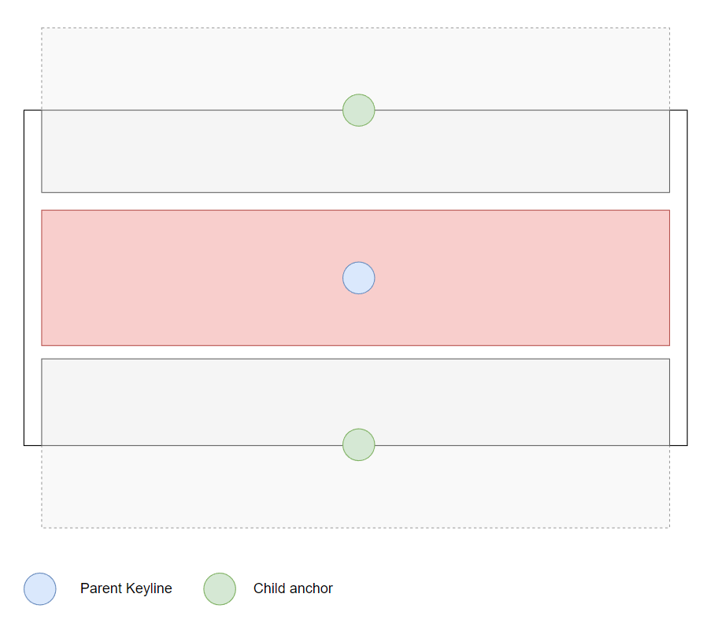
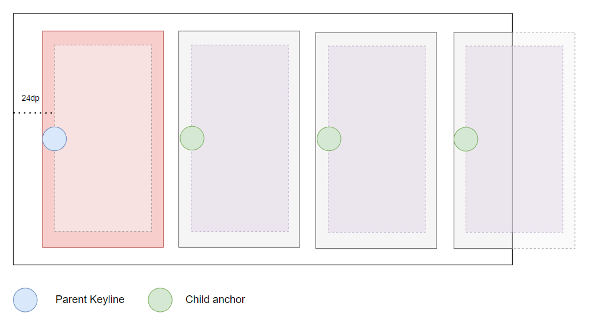
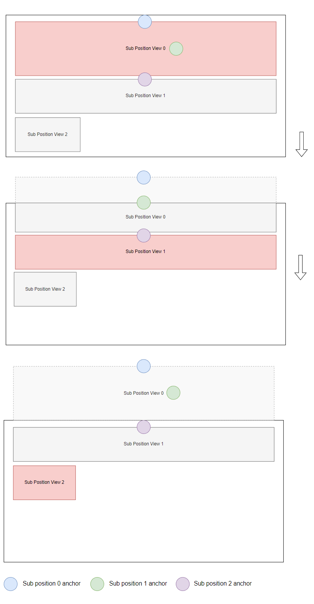

Alignment Recipes¶
Center alignment¶
Example of centering views in a vertical DpadRecyclerView:

Start alignment¶
Example of aligning views in a horizontal DpadRecyclerView:

If you want all items to be aligned to the keyline, even the ones at the start or end of the list,
you need to set an edge preference of ParentAlignment.Edge.NONE
Including padding in child alignment¶

In case you want to include padding for the alignment position, set the includePadding to true:
Padding will only be considered in the same orientation of the DpadRecyclerView and when the ratio is either 0f or 1f:
- start/top padding for horizontal/vertical when
fractionis 0f - end/bottom padding for horizontal/vertical when
fractionis 1f
Sub position alignment¶
You can define custom sub positions for every ViewHolder to align its children differently.
Each sub position alignment is essentially an extension of ChildAlignment.

In this example, we have 3 sub position alignments:
- Sub position 0 is aligned to the parent keyline
- Sub position 1 is aligned to the half of the view at sub position 0
- Sub position 2 is aligned to the top of the view at sub position 1
To achieve this, make your RecyclerView.ViewHolder implement DpadViewHolder and return the configuration in getSubPositionAlignments: